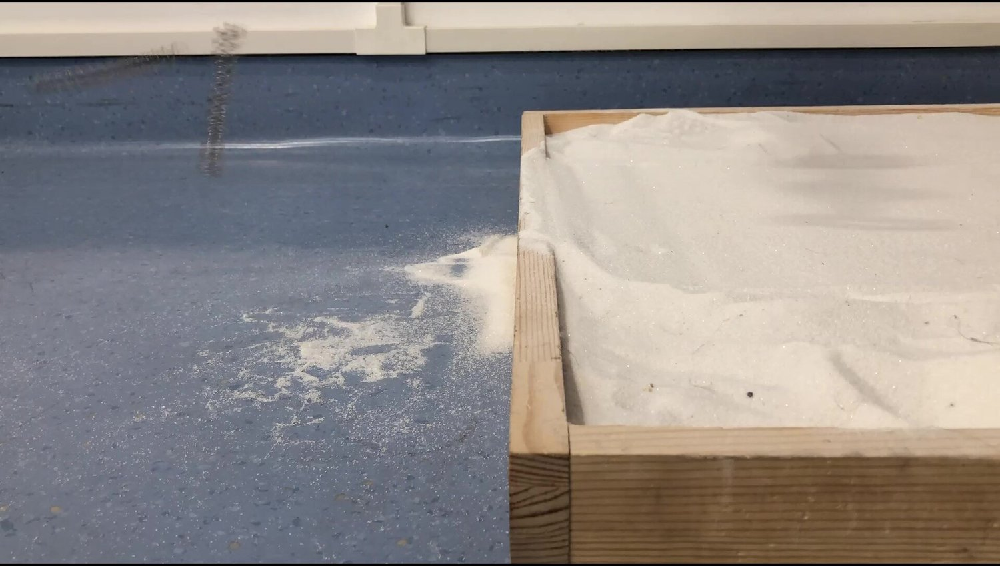

Let Go
Jan 2020, Prof. Kota pointed out the fundamental flaw of my double-linear-bearing cam-follower jumping mechanism. Double-linear-bearing was prone to parallelism tolerance, while cam-follower had poor performance under non-planar load.
I knew the flaws of my mechanism from very beginning, but I turned a closed eye to it. I wanted to believe that the mechanism could work. So, I told myself: “forget about the flaws. The mechanism would work!”. So, I got stuck with it. Passion is good and even precious, but I should never blind myself with passion.
Dec. 25 2019 was the 3rd day of testing. The 14th generation spread its wing and flew away. This was the last recording of my jumping vehicle. Goodbye, my jumping vehicle.

Acknowledgement:
Adviced by UMich Prof. Sridhar Kota from Nov. 2019 to Feb. 2020.